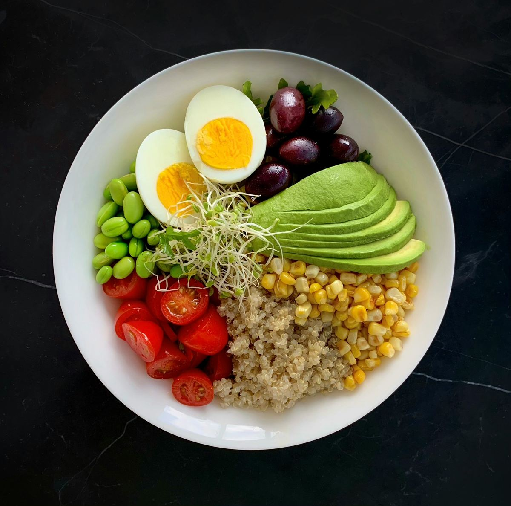

10 продуктов для здорового рациона
«Суперфудов» в научном смысле не существует: ни один продукт не сделает рацион здоровым в одиночку. Но есть продукты с высокой пищевой ценностью, которые стоит есть почаще, — и большинство из них продаётся в обычном магазине.

Десятка полезных продуктов
- Листовая зелень — шпинат, салаты, руккола, петрушка, укроп. Фолаты, витамин K и клетчатка при минимуме калорий. Как есть: горсть в омлет, суп, пасту или бутерброд.
- Капуста и брокколи — белокочанная, цветная, брюссельская капуста, брокколи. Витамин C, клетчатка и серосодержащие соединения, которые изучают за возможный защитный эффект. Как есть: салат из свежей капусты, брокколи на пару 5–7 минут.
- Ягоды — черника, смородина, клюква, брусника, облепиха, малина. Витамин C, клетчатка и полифенолы. Как есть: в кашу и йогурт; зимой подойдут замороженные.
- Бобовые — чечевица, нут, фасоль, горох. Растительный белок и много клетчатки по невысокой цене. Как есть: супы, рагу, хумус, салаты — 2–3 раза в неделю.
- Цельные злаки — овсянка, гречка, бурый рис, перловка, цельнозерновой хлеб. Клетчатка, магний, витамины группы B. Как есть: гарнир вместо белого риса; у хлеба первой в составе должна стоять цельнозерновая мука.
- Жирная рыба — сельдь, скумбрия, сардины, лосось, форель. Омега-3 жирные кислоты и витамин D. Как есть: рыба дважды в неделю, причём одна из порций — жирная. Консервы в собственном соку — бюджетный вариант.
- Орехи и семена — грецкие орехи, миндаль, фундук, семена льна, тыквы и подсолнечника. Полезные жиры, белок, витамин E. Как есть: горсть (около 30 г) в день, лучше несолёные.
- Яйца — полноценный белок, витамин B12, холин. Как есть: варёные, омлет, шакшука. Для большинства здоровых людей яйцо в день — нормальная часть рациона.
- Кисломолочные продукты — кефир, натуральный йогурт, творог, ряженка. Белок, кальций и живые культуры бактерий. Как есть: выбирайте без добавленного сахара, а сладость добавляйте ягодами.
- Растительные масла — оливковое, рапсовое, подсолнечное, льняное. Ненасыщенные жиры и витамин E. Как есть: для заправки салатов и готовки вместо сливочного. Льняное — только без нагрева.
Модные продукты и их доступные замены
| Модный продукт | Доступная замена | Что общего |
|---|---|---|
| Киноа | Гречка | Обе — «псевдозлаки» без глютена с хорошим белком |
| Семена чиа | Семена льна | Растительные омега-3 и клетчатка |
| Годжи, асаи | Черника, смородина, облепиха | Витамин C и полифенолы |
| Авокадо | Орехи, оливковое масло | Полезные ненасыщенные жиры |
| Капуста кейл | Белокочанная капуста, шпинат | Витамины C и K, клетчатка |
Список покупок на неделю
Полезная корзина
Отмечено 0 из 11
Отметки сохраняются только в вашем браузере, пока вы их не сбросите.
На что обратить внимание
- Аллергии. Орехи, рыба, яйца и молоко — частые аллергены. Если аллергия есть, никакая польза продукта её не перевешивает.
- Лекарства. Тем, кто принимает варфарин, важно есть примерно одинаковое количество зелени изо дня в день: витамин K влияет на действие препарата. Обсудите рацион с врачом.
- Соль и сахар в «полезных» продуктах. Гранола, батончики, йогурты с наполнителями и квашеные овощи могут содержать много сахара или соли — читайте этикетку.